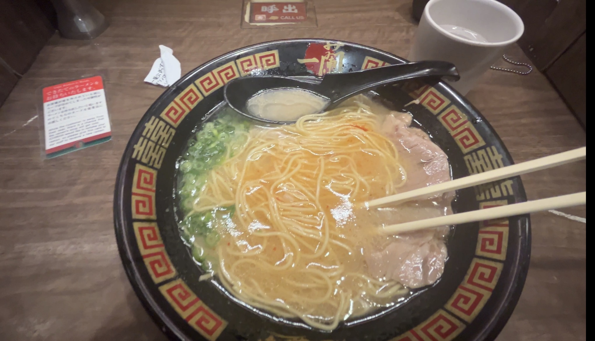
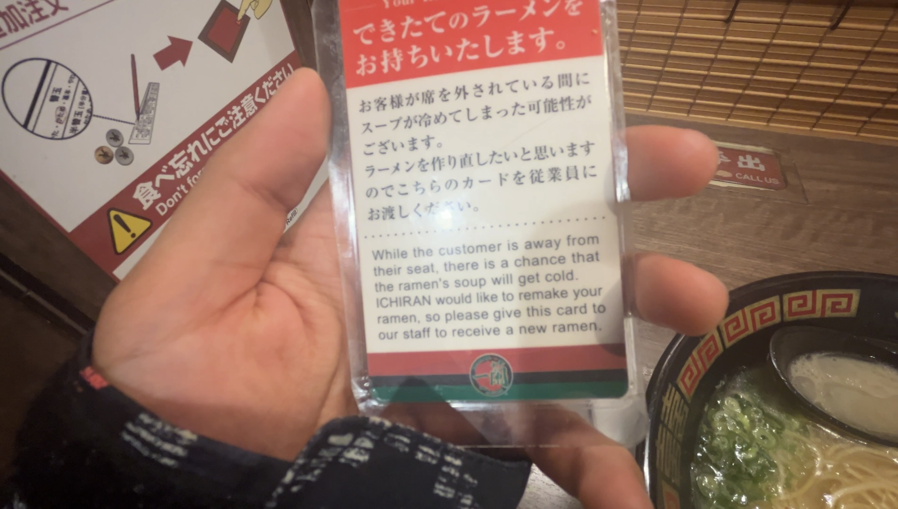

SMART ERA
2026.04.16
Hello, MAYASMIND™! Today marks two weeks since I first landed in Osaka! And 10 posts! Oh boy, what a crazy whacky journey it has been. I think it’s safe to say I love Osaka. JK, I’m not a skins character who falls in love within hours. I have a crush on Osaka, but I’m not completely smitten with it. Reguardless, we’ll see where this thing goes…
TRAIN SARDINES
This week, I decided to take the train to school instead of walking. Let me tell you, the trains here in Osaka are packed with people during rush hour. People sandwiched themselves into the car like those crazy people who shimmy between small spaces in caves. It felt like we were in the midst of a headliner concert when everyone is forming huge moshpits and pushing into each other and you can’t breathe. Except in this case, the moshpit is working twelve hours a day and the headliner is The Man. I know that made no sense, but you get the gist.
It’s so uncomfortable because I’m literally butt to butt and chest to chest with these business people. Most of the time, there is still about half an inch of personal space available, but sometimes it’s like when the moshing begins and you are scared of getting trampled. During these times, I stumble out of the train every stop to take a breather, then spelunk my way back in. It’s crazy, but hey, that’s Osaka for ya’.
MUJI
When I was walking to the train, I saw this shop named “MUJI,” which I thought was facinating because they sold clothes, beauty products, cookware, and astronaut food. Well, not really astronaut food, but it was a whole section of dried foods. The whole vibe of this place was… like a mini IKEA? I don’t know, but this shop intrigued me. I’m gonna go back some time and then I’ll report to back to you my findings. Maybe a series can be made out of this? “Maya and the Mysteries of MUJI,” or something like that. IDK. What y’all think? Put it in the comments section below. JK. Lol. No. Just text me or something like that. Lol.
Oh wait, I actually took a photo of this place:

This is the dried food section I was talking about. What is this about? Who did thought of this? How do you make dried food? I’m going to figure this out for you guys. “Maya and the Mysteries of MUJI” is a go.
FIRST RAMEN IN OSAKA!
I went to this famous place named “Ichiran Ramen” in Doyamacho. This and the Rikkuro cheesecake were both foods that I saw ten years ago on buzzfeed (or some other millennial newsfeed) and wanted to try so bad. I remember that I’d drool over a video about it everyday after school (it’s surprising that I wasn’t much of a chubby child for how obsessed over food I was.)
Recently, I haven’t really thought about them since. I was only reminded by the people at my school that those places exist. So, I decided to fulfill the desires of my inner child.
The ordering process is actually quite complex. First, you have to order on a screen to get your food ticket. Then, you are handed a sheet that looks like a freaking job application. It asks you how much green onion, garlic, spice, you want, how firm you want the noodles, even how rich you want the broth to be. It was like I was being graded for the perfect ramen bowl. It’s kinda awkward because the worker was literally standing directly in front of me, so I could have just told her, but the experience is supposed to be solitary and compassionless so she was doing her job well.
When sat, you are in study area-like booths with a bamboo screen in the back that leads to the kitchen area. When you are ready to order, you put your order ticket + the sheet you filled out in front of this screen, then press the “CALL US” button. Next, the waiter behind the screen comes by, tests you on your Japanese gibberish comprehension skills, then takes your ticket.
After I completed all the required steps, I almost forgot to make a fool of myself by dropping my phone extremely loud then bumping into everyone. Thankfully, I remembered because I’m a natural goof. When I was using the individual bathroom, someone was eerily turning the handle for so long. It was literally like a Japanese ghost story. I opened the door to an old Japanese woman, and she was so cute and sweet. She said to me “oh, sorry” in English, then proceeded to speak to me in full japanese sentences I couldn’t understand. Like, why would you speak English to me in the first place, cute Japanese lady? You’re so silly.
When I came back, I found my ramen bowl:

and this little note:

If you can’t read it, it says “When the customer is away from their seat, there is a chance that the ramen’s soup will get cold. ICHIRAN would like to remake your ramen, so please give this card to our staff to reveive a new ramen.”
This place is incredible. I literally could have gotten a new ramen bowl because I was gone for like one minute. I might actually be a skins character because I’m totally in love.
Something I found interesting about this place is that they have these little wooden signs that you can give to the waiter to communicate something. Not only that, but they had a sign for when it’s too loud, “It’s Noisy.” I was wondering what they would do if I gave them this sign. Were they going to reach into everyone’s booth and do the quiet coyote sign? Like, how would they tell people to be quiet? I didn’t test this theory, but I’m curious about it. Maybe I’ll test it out today because I’m totally going back. This freakin ramen was delicious. The richness was top shelf. The pork was melt in your mouth. So good. It tastes just as good as I thought it would taste when I was 10, AND it was only $7.82. I’m so happy for me.
Okay blog. I am going to continue doing other things in my life, like a personal research paper. I never thought I’d be doing research in my leisure time. This is my smart era I guess. Thank you for being here! じゃね！